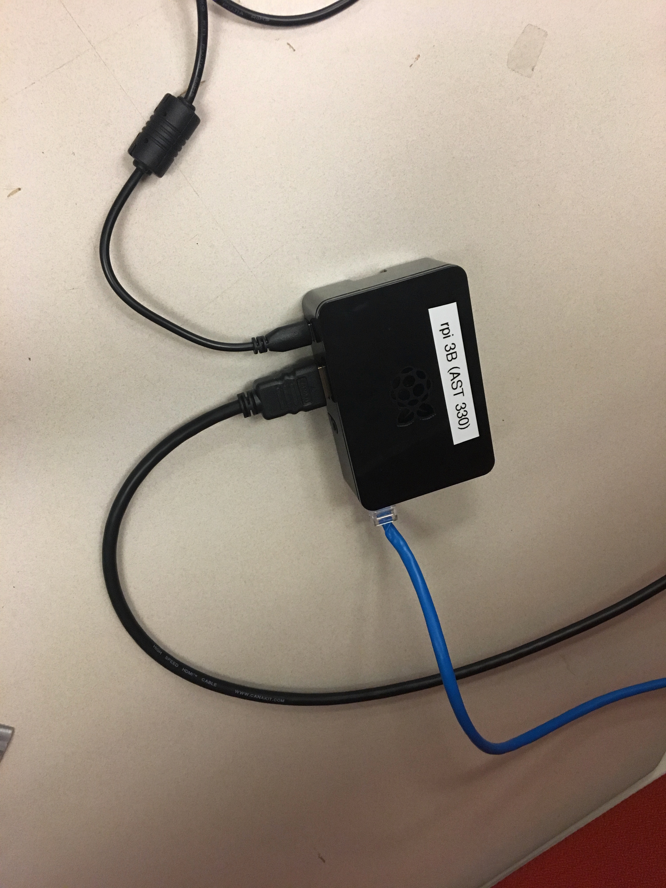

Navigation Instructions
The software section of this project is organized in a recommended order,
but can be easily navigated through with the use of the side navigation bar.
For each lesson there are multiple resources for the user: there is a YouTube
video presentation, as well as a downloadable pdf word file with included pictures
of step-by-step directions.
Materials
To get started, here is a list of materials you will need for software instillation:
-Raspberry Pi 3B
-Micro SD Card (32GB)
- RTL-SDR
- A computer monitor
-Ethernet cable (if not using WiFi option)
-Radio antenna
-Personal computer
-Keyboard
Before starting this tutorial, it’s highly recommended to go through the ‘Software Vocabulary’ section (link here) to get familiar with the concepts explained in the following tutorial.
Introduction
Most of us familiar with using a Mac or PC computer and are comfortable with this kind of set up. This project’s set up is going to be different than these systems, but not difficult to navigate after spending some time getting familiar with all of the components. For this project, we will be using a Raspberry Pi as our computing device. This type of computing device doesn’t store data locally, so we will need to use an SD card for storage. Since we will be starting with a computing device that doesn’t have a preinstalled OS or GUI, we will need to set these up so that we can interact with the computer with ease. We chose Ubuntu (a version of Linux) as our OS along with the MATE GUI extension.
Material Set Up
To get started, we need to make sure that all our wires are hooked up and ready to go.
-Hook up your Raspberry Pi to your monitor.
-Plug in your ethernet cable (or wifi).
-Plug in your Raspberry Pi into a power source.
-Hook up to your keyboard (we used a wireless hook up for ours).

Raspberry Pi Hooked Up
Download Ubuntu MATE
For the following steps of installing Ubuntu MATE I followed the tutorial below presented by Tech Radar.
Install Ubuntu MATE on Raspberry Pi
First, we will need to install Ubuntu Mate as our operating system and GUI. We will need our personal computer in order to do the first step in this process.
To download Ubuntu MATE we will use our personal computer and visit
Ubuntu MATE Download and click on “Raspberry Pi (Recommended)”. At the time of writing this, I chose “10.04.2 Bionic” as the release version that I am running.
Descompressing the File
After downloading Ubuntu MATE, we will need to install a decompression utility in order to read the Ubuntu file.
For Mac: The Unarchiver is available free from the App Store to extract the .xz file. Once the utility is installed, double-click the file in your downloads to extract the image (.img) file.
For Windows: Go to the 7-Zip website to install the application. Click on ‘Download’, choose ‘Save’. Go to ‘Downloads’ in File Explorer. Double click on the ‘7-Zip’ file. Choose ‘Install’.
I’m using a Mac, and my steps/downloads looked like this:
 Here I have ‘The Unarchiver’ decompression utility downloading that I downloaded from the app store.
Here I have ‘The Unarchiver’ decompression utility downloading that I downloaded from the app store.
 I saved both of these downloads next to each other on my desktop for easy navigation.
I saved both of these downloads next to each other on my desktop for easy navigation.
 After opening my Ubuntu file by double clicking, my file converted and saved on my desktop like this.
After opening my Ubuntu file by double clicking, my file converted and saved on my desktop like this.
Formatting the Micro SD card
For the micro SD card to be compatible with the Raspberry Pi, it has to be formatted to FAT32.
For Mac: In order for your microSD card to be compatible with the Raspberry Pi it must be formatted to FAT32.
Connect the microSD card to your mac. The system will automatically mount it. Click ‘Spotlight’ at the top right of the screen, type ‘Disk Utility’ and press return.
Once Disk Utility launches, select the microSD card from the list of available disks in the pane on the left. Click the ‘Erase’ tab, then select ‘MS-DOS (FAT)’ from the ‘Format’ drop down menu.
You can also set a name for the microSD card here e.g. MY SD 1. Click the ‘Erase’ button when you’re ready.
For Windows: Insert your SD card into the slot on your computer or a USB adapter.
Windows will now inform you that you need to format the disk in order to continue. Click ‘Format Disk’. Next, you can choose the format, file system, allocation unit size and volume label. Windows will warn you that formatting will erase all previous data on the SD card. Choose ‘Ok’ to continue. The device will then be formatted.
If you don’t see the above notification, open Windows Explorer. Search for the SD drive. Right-click on this and from the drop-down menu, select format. Windows will automatically default to FAT32.
Set Up Ubuntu MATE on Raspberry Pi
insert text here